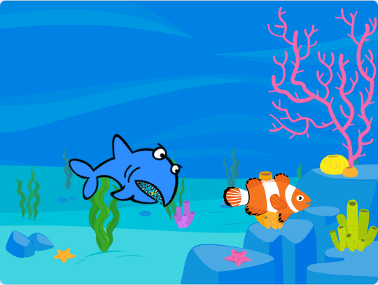
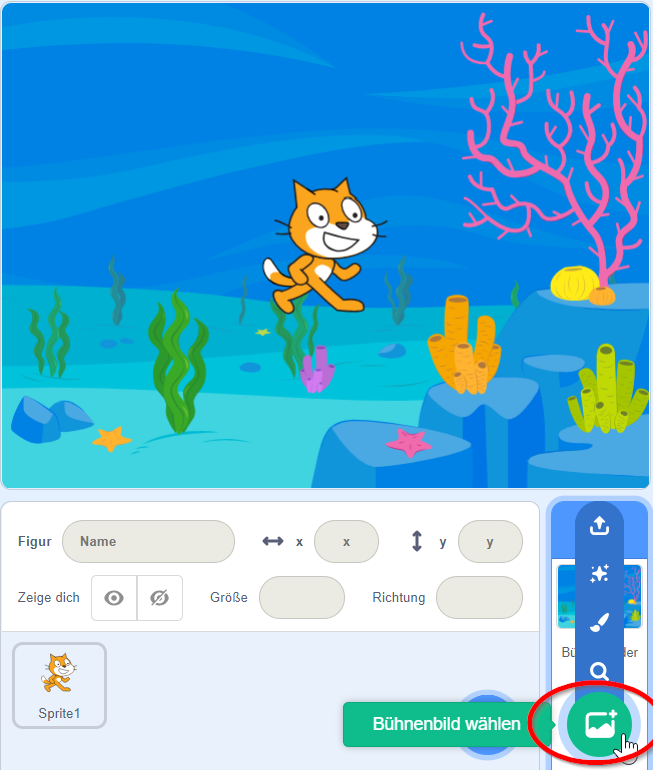
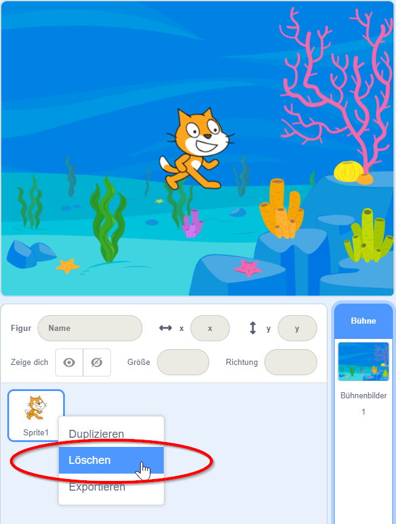
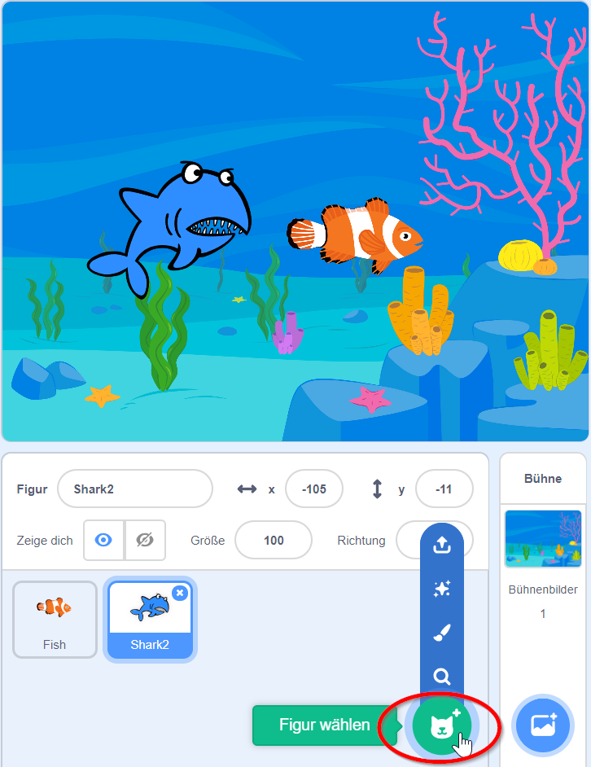
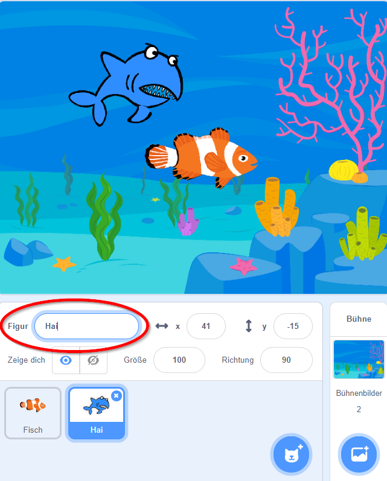
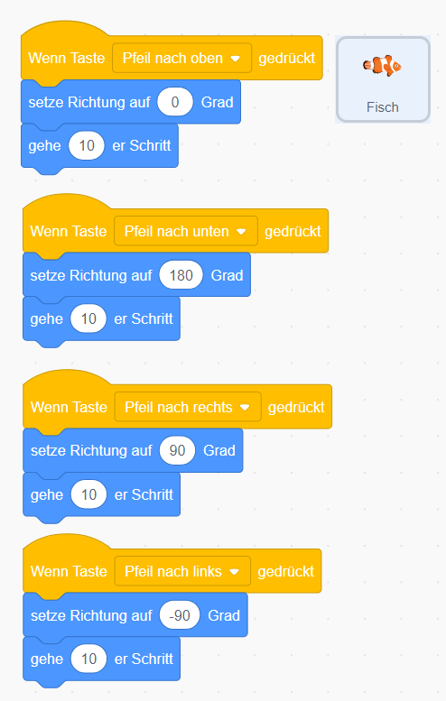
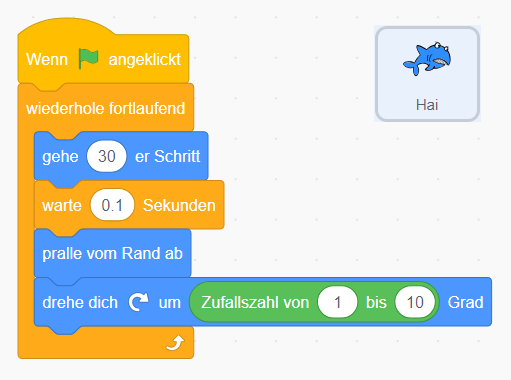
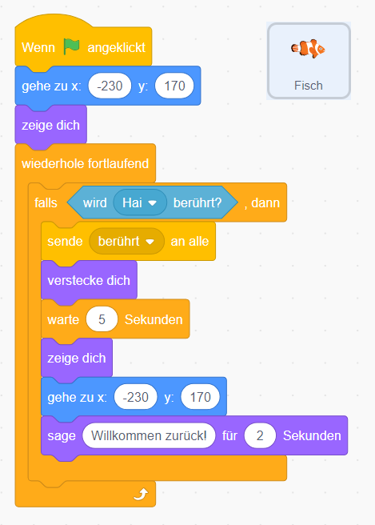
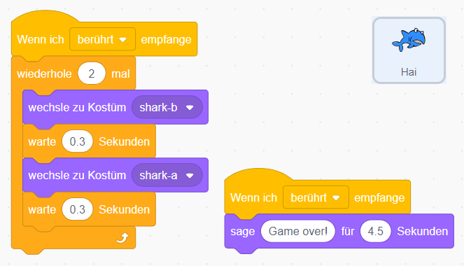

Scratch Fang-Mich

In diesem Spiel bist du ein Fisch, der dem großen Haifisch entkommen muss. Schaffst du es?
Als erstes legst du fest, wie dein Spielfeld aussehen soll. Wir brauchen zuerst das Aquarium, in dem die Fische schwimmen. Wähle als erstes rechts unten unter Bühnenbild wählen ein Bühnenbild aus, zum Beispiel ein Aquarium.

Als nächstes lösche die Figur Scratchy mit dem Namen Sprite 1 indem du mit der rechten Maustaste darauf klickst.
Im angezeigten Menü kannst du Scratchy löschen.

Jetzt brauchen wir einen Haifisch sowie einen Fisch, mit dem wir dem Haifisch entkommen wollen. Klicke dazu auf Figur wählen und füge einen Fisch sowie einen Haifisch dazu. Natürlich können es auch andere Figuren sein, zum Beispiel ein Käfer, der dem Vogel davonfliegt oder eine Person, die dem Löwen davonläuft.

Damit du später die Figuren leichter verwenden kannst, gib ihnen Namen wie Hai und Fisch. Du kannst den Namen von Figuren ändern, indem du unter der weißen Leinwand rechts neben dem Wort Figur auf das Namensfeld klickst und den neuen Namen eingibst.

Fisch bewegen

Damit du den Fisch bewegen kannst, musst er nach links und rechts sowie oben und unten bewegt werden können.
- Wähle zuerst den Fisch aus, damit er blau umrandet ist.
- Im Tab Code kannst du deinen Fisch nun bewegen. Verwende das Ereignis Wenn Taste … gedrückt unter Ereignisse.
- Verknüpfe es jeweils mit einer Drehung setze Richtung auf … unter Bewegung, damit der Fisch in die richtige Richtung schaut.
- Außerdem brauchen wir gehe …er Schritt, um den Fisch zu bewegen.
- Für Pfeil nach oben gedrückt: Richtung 0 Grad, gehe 10er-Schritte.
- Für Pfeil nach unten gedrückt: Richtung 180 Grad, gehe 10er-Schritte.
- Für Pfeil nach rechts gedrückt: Richtung 90 Grad, gehe 10er-Schritte.
- Für Pfeil nach links gedrückt: Richtung -90 Grad, gehe 10er-Schritte.
Je größer die Schrittanzahl, desto schneller ist dein Fisch.
Haifisch bewegen
{: .right}
Jetzt soll der Haifisch im Aquarium herumschwimmen.
- Wähle dazu den Haifisch aus, damit er blau umrandet ist.
- Im Tab Code kannst du den Haifisch nun bewegen.
- Unter Ereignisse wähle Wenn … angeklickt.
- Anschließend wähle wiederhole fortlaufend bei Steuerung aus.
- Bewege den Haifisch mit gehe 10er-Schritt, *warte 0.1 Sek.” Hinweis: Scratch akzeptiert nur einen Punkt als Kommazeichen, pralle vom Rand ab und drehe dich um … Grad
- Um etwas mehr Zufall reinzubringen, nimm im Menü Operatoren den Block Zufallszahl von 1 bis 10 und ziehe ihn an die Stelle der 15 Grad.
Fisch fangen
{: .right}
Wenn der Haifisch den Fisch berührt, soll der Fisch ausgeblendet und wieder ins linke obere Eck gesetzt werden.
- Wähle dazu den Fisch aus, damit er blau umrandet ist.
- Im Tab Code kannst du den Fisch verschwinden lassen, sobald er den Haifisch berührt.
- Unter Ereignisse wähle Wenn … angeklickt.
- Setze den Fisch an Position -230 und 170 mittels gehe zu x: -230, y: 170, um den Fisch ins linke obere Eck zu setzen, und zeige dich.
- Falls jetzt der Hai berührt wird (Steuerung falls … dann), dann sende “berührt” an alle, verstecke dich, warte 5 Sekunden, zeige dich, und gehe wieder ins linke obere Eck mit gehe zu x: -230, y: 170. Anschließend sage Willkommen zurück für 2 Sekunden.
{: .right}
Wenn der Haifisch den Fisch berüht, soll er zwei mal schnappen und das Spiel “Game Over” sein.
- Wähle dazu den Haifisch aus, damit er blau umrandet ist.
- Im Tab Code kannst du den Haifisch “Game Over” sagen lassen.
- Unter Ereignisse wähle Wenn ich … empfange, der Hai reagiert somit auf die vom Fisch ausgelöste Nachricht.
- Anschließend wähle wiederhole 2 mal bei Steuerung aus.
- Um den Haifisch schnappen zu lassen, gibt es unter Aussehen verschiedene Varianten des Hais. Füge folgende Blöcke in den Wiederhol-Block: wechsle zu Kostüm b, warte 0,3 Sek., wechsel zu Kostüm a, warte 0,3 Sek.
- Und um den Haifisch “Game over” sagen zu lassen, füge einen neuen Wenn ich … empfange Block hinzu und sage “Game Over!” für 4.5 Sekunden.
Weitere Ideen
- Mach das Spiel schwieriger, indem du einen zweiten, langsameren Haifisch dazu gibst.
- Baue eine Uhr ein, um zu sehen, wie lange du dem Haifisch entkommen kannst.
- Steuere den Fisch mit der Maus anstatt der Tastatur.
Herunterladen
Du kannst das fertige Projekt unter fang.mich.sb3 herunterladen.